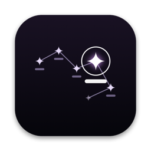

Lune 1.0
- File
- Lune-1.0.dmg · 1.3 MB
- Needs
- macOS 14 Sonoma or later · Apple silicon
- SHA-256
8eddd9aee91f8c24476c3878e37d2dc871283c55c026599cd24b6307dd297604
Two free menu-bar apps for listening at night. Lune lights the edge of your screen in the colours of the album that’s playing. Vers lights the lyrics, one word at a time, the moment each word is sung. Spotify or Apple Music. macOS 14 or later, or Windows 10 and 11.
Both apps read the cover of whatever is playing and take its colours. Pick a sleeve and watch the screen, and this page, change with it.
Light that runs around the edge of your screen and moves with the song.
Lune pulls the strongest one, two or three colours from the cover and fades between songs. Prefer your own? Set a primary, secondary and third colour on the colour wheels.
The light dips round the camera notch. If you use boringNotch, Lune follows its outline as it widens for the song or opens on hover.
Press play and the edge fades in. Pause and it fades out. You can keep it on all the time if you like.
From a hairline along the bezel to a broad band that washes the whole desk. Two sliders, set once.
Drawn on the GPU in Metal, timed to your display. It holds 60 frames a second at around 3% CPU on an M1.
Permission: Music Sync and notch tracking need Screen & System Audio Recording in System Settings → Privacy & Security. Lune analyses the sound live and never records it, never uploads it and never uses your microphone.

Lyrics that light up word by word, right on your desktop.
The timing underneath never changes, only the way the words arrive. Preview every style in the Vers window, then switch mid-song.
Fast, dense verses get the punchy styles. Slow songs get the airy ones. The same song always looks the same.
Synced lyrics come from LRCLIB. When a song is only timed line by line, Vers spaces the words by their syllables so they still land with the singer.
The Visual styles drop a matching SF Symbol next to words it knows: a heart, a car, the moon.
Seven typefaces, a size slider, and three colours: lyric, highlight and secondary. Auto Sync takes them from the album cover.
A black background fades in behind the words while the song plays and out when you pause. Vers keeps the display awake so the lyrics never dim mid-song.
Permission: the first time a song plays, macOS asks to let Vers read Spotify or Music. That’s how it knows the song and where you are in it.
Run them together and Vers dims the room to black while Lune draws the light on top, both taking the same colours from the same cover. It’s the setup from those late-night desk videos, on your own Mac.
8eddd9aee91f8c24476c3878e37d2dc871283c55c026599cd24b6307dd29760444bfbe94ddb87da4f787b6712c375bb90bc837bb51764ad43a82d2d31c455b23c203ea3c04a4f03942200a5b4c969e93d658fff4fe30714457076eac0f768427f935ff7e1fe04b71eaadc0e5c6cd5137640e502309a55abda00590b33a7e302eNo. Both apps are free, with no account and nothing to sign in to.
On a Mac, Spotify and Apple Music. On Windows, anything that shows in the volume pop-up: Spotify, Apple Music, YouTube in a browser and more. Start a song and both apps notice on their own; there’s no Connect button.
No. Vers shows lyrics on your desktop and over full-screen apps while you’re signed in. Drawing on the macOS lock screen needs private system access, so we left it out.
Most popular songs do. Vers finds them on LRCLIB, a free lyrics library, and also tries the plain song title for tracks like “Song (feat. Someone) – Remix”. If nothing is found, the menu says so.
No. macOS files system audio under “Screen & System Audio Recording”, which is why it asks. Lune listens to the sound to find the beat and, with boringNotch, looks only at that app’s notch. Nothing is saved or sent anywhere.
The apps are free and not notarised by Apple. Right-click the app, choose Open, then Open again. You only do this once. You can check the download against the SHA-256 listed above.
You don’t need to do anything. From version 1.1, Lune and Vers check for updates when they start and every few hours, install them quietly and reopen. A small notice shows the progress. You can also click Check for Updates in the tray menu or the player’s settings. If you installed 1.0, install once more from this page to get automatic updates.
The installers aren’t signed with a paid certificate, so SmartScreen may say “Windows protected your PC”. Click More info, then Run anyway. You can check the file against the SHA-256 listed above.
On a Mac, quit the app from its menu-bar icon and drag it from Applications to the Bin. On Windows, quit it from its tray icon and remove it in Settings → Apps.